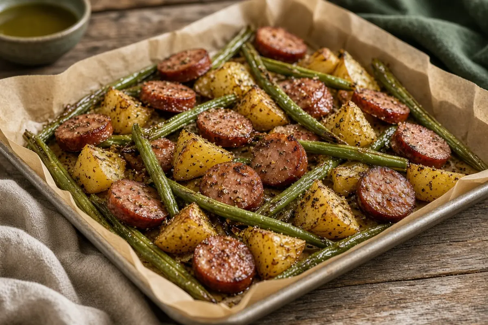

Sheet-Pan Sausage with Potatoes and Green Beans
Smoked sausage coins, gold potatoes, and fresh green beans tossed in olive oil and dried herbs and roasted together on one hot sheet pan. Dinner in about 40 minutes.

Adapted from thewholecook.com
4 servings
By
Yield: 4 servings
Prep:
Cook:
Total:
Difficulty: Easy
Ingredients
- 4 fully cooked smoked sausages (about 14 oz), sliced 1/4 inch thick
- 1 lb gold potatoes, cut into 1-inch chunks
- 12 oz fresh green beans, trimmed
- 3 Tbsp extra-virgin olive oil
- 3/4 tsp kosher salt
- 1/2 tsp black pepper
- 1/2 tsp garlic powder
- 1/2 tsp dried basil
- 1/2 tsp dried oregano
Instructions
- Heat the oven to 425°F with a rack in the middle. Line a large rimmed sheet pan with parchment.
- Pile the potatoes on the sheet pan, drizzle with half the olive oil, and season with half the kosher salt. Toss and spread out. Roast 10 minutes to give the potatoes a head start.
- Meanwhile, toss the sausage and green beans in a bowl with the rest of the olive oil and salt, the black pepper, garlic powder, basil, and oregano.
- Add the sausage and green beans to the sheet pan, stir everything together with the potatoes, and spread it back into a single layer.
- Roast 20 minutes, stirring once halfway, until the potatoes are tender and browned and the sausage edges crisp.
- Taste for salt, and serve straight from the pan.
Notes: Pick a good fatty smoked sausage or kielbasa; andouille brings heat. Giving the potatoes 10 minutes on their own means they finish tender when the beans are crisp-tender. Pellet grill option: roast the pan at 425°F on the grill for the same times. Doubles easily on two pans. Adapted from the sheet pan sausage dinner at thewholecook.com.